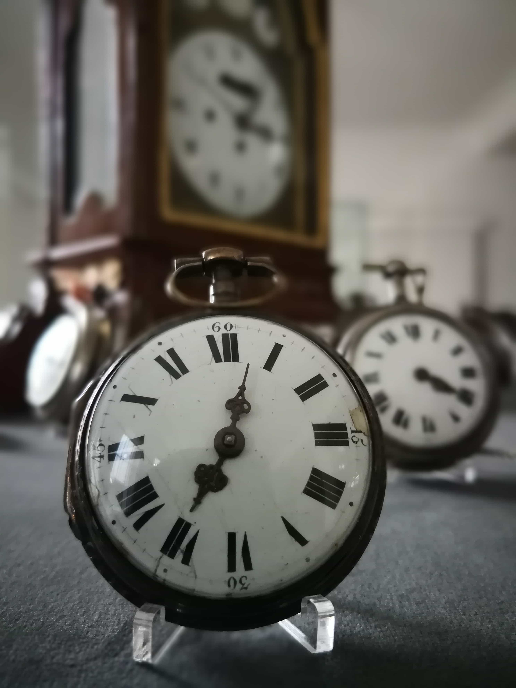
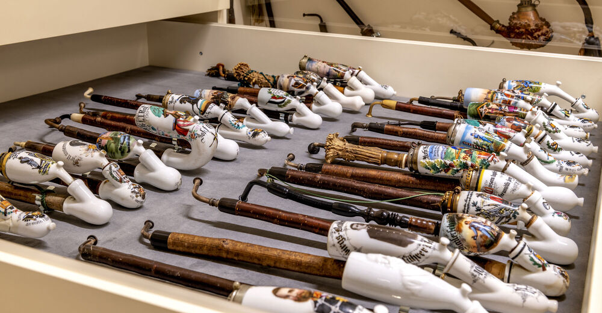
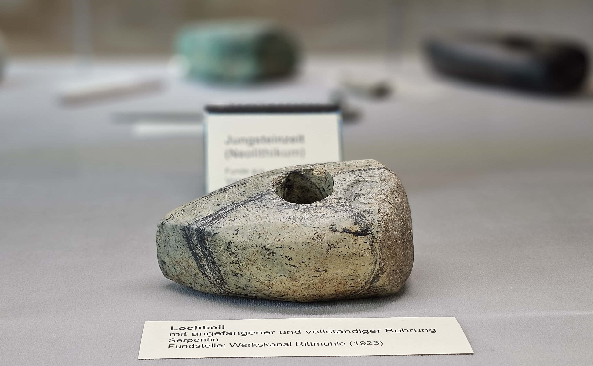
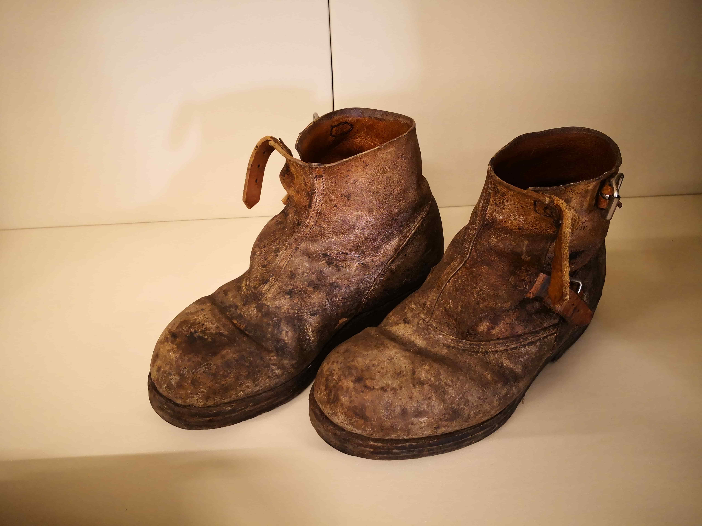
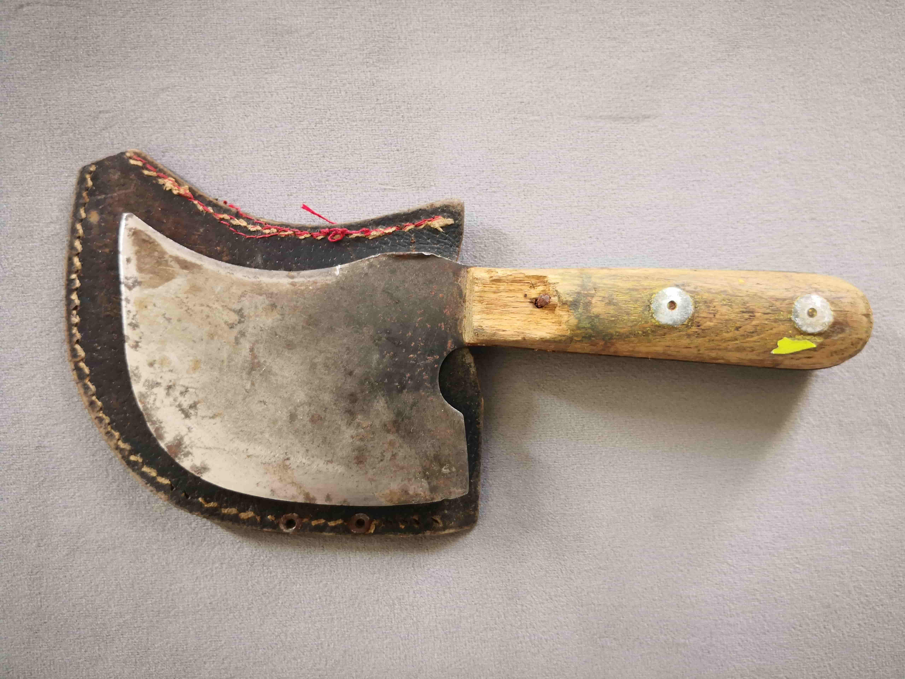
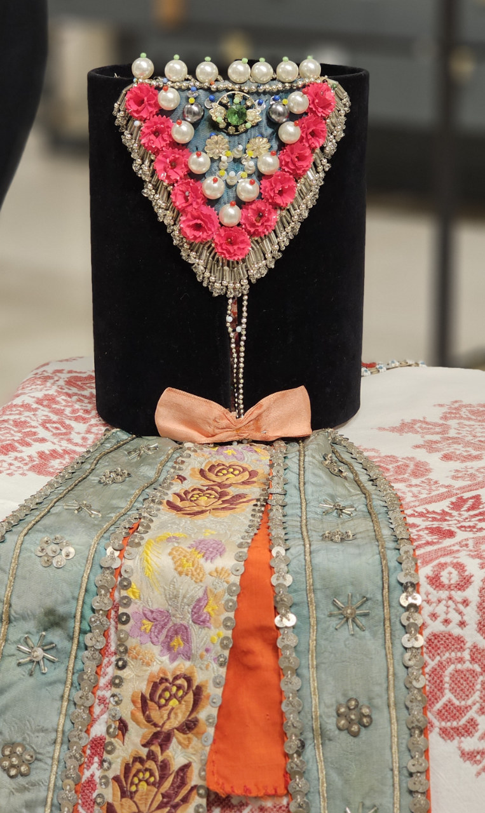

Schätze der Region Vorchdorf
Das Museum der Region Vorchdorf beherbergt eine beeindruckende Sammlung von Exponaten, die die Geschichte und Kultur unserer Region lebendig werden lassen. Von prähistorischen Funden über kunsthandwerkliche Meisterwerke bis hin zu Zeugnissen der Industriegeschichte – jedes Objekt erzählt seine eigene Geschichte.
Als Heimat- und Kulturverein sind wir stolz darauf, diese wertvollen Schätze zu bewahren und einem breiten Publikum zugänglich zu machen. Unsere Sammlung wächst stetig und wird kontinuierlich in der MUKO-Datenbank erfasst und dokumentiert.

Krumhuber Taschenuhren
Die Uhrmacherfamilie Krumhuber aus Vorchdorf erlangte im 18. und 19. Jahrhundert europaweit Berühmtheit für ihre präzisen und kunstvoll gefertigten Spindeltaschenuhren. Diese Meisterwerke der Uhrmacherkunst wurden nach ganz Europa verhandelt und sind heute bei Sammlern weltweit hochbegehrt.
Unsere Sammlung umfasst zahlreiche wunderschöne Exemplare dieser historischen Zeitmesser, die nicht nur technische Präzision, sondern auch höchstes handwerkliches Können demonstrieren.

Pfeifensammlung
Eine der Hauptattraktionen unseres Museums ist die außergewöhnliche und landesweit einzigartige Sammlung historischer Tabakpfeifen. Diese umfangreiche Kollektion zeigt die Entwicklung der Pfeifenkultur über mehrere Jahrhunderte hinweg.
Von einfachen Tonpfeifen bis hin zu kunstvoll verzierten Meisterstücken aus Porzellan und Meerschaum – jede Pfeife ist ein Kunstwerk für sich und spiegelt die gesellschaftlichen und kulturellen Entwicklungen ihrer Zeit wider.

Vor- und Frühgeschichte
Tauchen Sie ein in die faszinierende Vor- und Frühgeschichte der Region Vorchdorf. Unsere archäologische Sammlung umfasst bedeutende Funde aus verschiedenen Epochen, die Zeugnis ablegen von der frühen Besiedlung unserer Heimat.
Von steinzeitlichen Werkzeugen über bronzezeitliche Artefakte bis hin zu römischen Funden – diese Exponate erzählen die Geschichte der Menschen, die vor Jahrtausenden in dieser Region lebten und arbeiteten.

Kitzmantelfabrik Geschichte
Die Kitzmantelfabrik, in deren historischen Mauern unser Museum heute beheimatet ist, war über 125 Jahre lang ein bedeutender Wirtschaftsfaktor in Vorchdorf. Bis 1995 wurden hier hochwertige Lederschuhe produziert.
Unsere Sammlung zur Industriegeschichte umfasst Originalwerkzeuge, Maschinen, Produktmuster und eine eindrucksvolle Medienwand mit Zeitzeugenvideos ehemaliger Arbeiter. Diese Exponate dokumentieren nicht nur die technische Entwicklung, sondern auch die sozialen und wirtschaftlichen Verhältnisse der Arbeiterschaft.

Traditionelles Handwerk
Die Sammlung zum traditionellen Handwerk zeigt die vielfältigen Gewerbe, die das Leben in Vorchdorf über Jahrhunderte prägten. Von der Schmiedekunst über das Tischlerhandwerk bis zur Textilverarbeitung – jedes Exponat erzählt von der Meisterschaft und dem Fleiß unserer Vorfahren.
Werkzeuge, Produkte und Dokumente illustrieren die Entwicklung der Arbeitswelt und vermitteln ein lebendiges Bild vom Alltag früherer Generationen in unserer Region.

Volkskultur und Religion
Diese Abteilung widmet sich dem religiösen und volkskulturellen Leben in Vorchdorf. Sakrale Kunstwerke, Votivgaben, Trachten und Objekte des Brauchtums zeigen die tief verwurzelten Traditionen unserer Region.
Von festlichen Trachten über religiöse Devotionalien bis zu Gegenständen des bäuerlichen Jahreskreises – diese Exponate dokumentieren die kulturelle Identität und das spirituelle Leben der Vorchdorfer über die Jahrhunderte hinweg.
Entdecken Sie mehr
Erkunden Sie unsere umfangreiche Sammlung an Bildern und Videos, die die Geschichte und Kultur unserer Region dokumentieren.